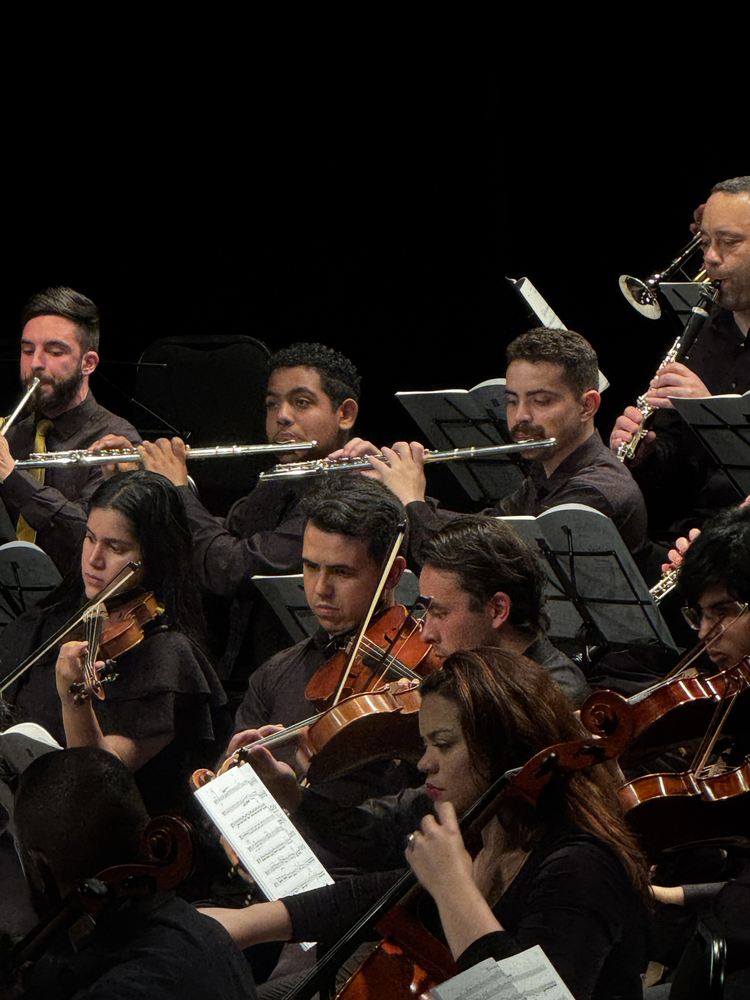

Seja voluntário
Participe das atividades da ONG e contribua com nossos projetos culturais e sociais.

A Orquestra Filarmônica Curitibana é uma ONG cultural e beneficente que utiliza a música como instrumento de transformação social e acesso à cultura.
Conheça nossos projetosSomos uma organização dedicada à promoção da música de concerto e ao desenvolvimento de projetos culturais voltados para a comunidade.
Por meio da música, buscamos proporcionar oportunidades de aprendizado, convivência e desenvolvimento para crianças, jovens e adultos.
Participe das atividades da ONG e contribua com nossos projetos culturais e sociais.
Sua contribuição ajuda a manter nossos projetos musicais e ampliar o acesso à cultura.
Conheça nossas iniciativas e acompanhe as ações desenvolvidas pela organização.
Uma apresentação especial para celebrar o encerramento da temporada 2026.
Data: 12 de dezembro de 2026
Local: Curitiba - Paraná